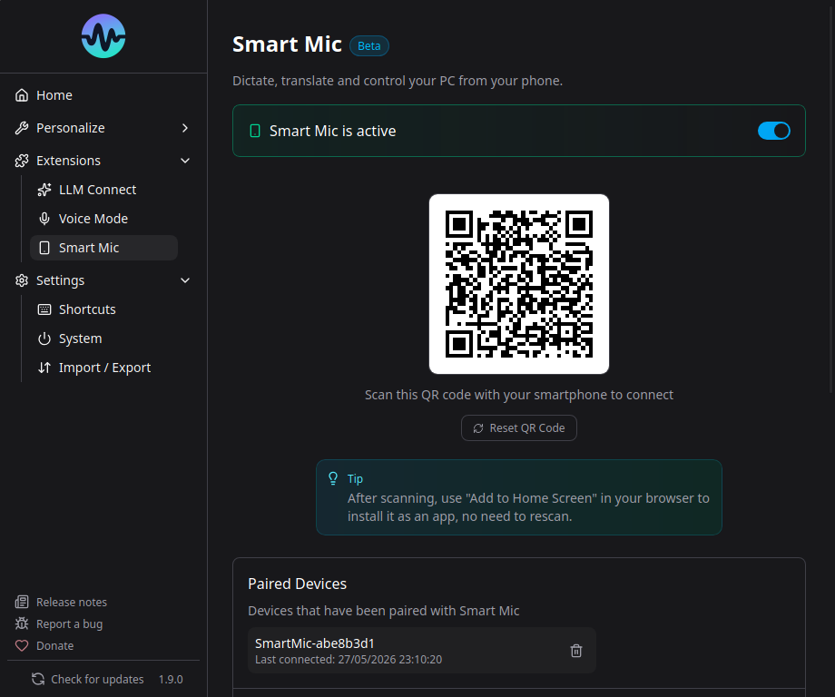

Smart Speech Mic¶

Smart Speech Mic transforme n'importe quel smartphone en microphone sans fil pour Murmure. Aucune installation requise sur le telephone - scannez simplement un QR code.
Fonctionnement¶
- Murmure demarre un serveur HTTPS local sur votre ordinateur
- Un QR code s'affiche dans l'application
- Vous scannez le QR code avec votre telephone
- Votre telephone ouvre une page web qui diffuse l'audio vers Murmure via WebSocket
- Murmure utilise l'audio du telephone comme entree microphone
Mise en place¶
- Allez dans Extensions > Smart Speech Mic
- Activez Smart Speech Mic
- Un QR code apparait
- Scannez-le avec votre telephone (les deux appareils doivent etre sur le meme reseau)
- Autorisez l'acces au microphone dans le navigateur du telephone
- Enregistrez dans Murmure comme d'habitude
Vues du telephone¶
L'interface web du telephone propose trois onglets en haut de l'ecran, chacun offrant une facon differente d'utiliser Smart Speech Mic. La vue active est memorisee entre les sessions, le telephone reouvre donc l'application sur le dernier onglet utilise.
Remote¶
Le mode par defaut. Votre telephone sert de microphone sans fil et de telecommande pour Murmure :
- Le bouton REC diffuse votre voix vers l'ordinateur et colle la transcription dans le champ texte actif
- Le trackpad controle le pointeur de la souris (tap pour cliquer, appui long pour clic droit)
- Les boutons Entree et Retour arriere envoient des evenements clavier a l'ordinateur
Utilisez ce mode pour la dictee mains libres quand le texte doit apparaitre directement dans une application de l'ordinateur.
Transcription¶
Un historique chronologique des transcriptions affiche sur le telephone. Utile quand vous voulez lire ou partager ce qui a ete dicte sans l'envoyer a une application specifique sur l'ordinateur.
- Chaque transcription est horodatee
- Touchez une entree pour copier son texte dans le presse-papiers du telephone
- Le bouton Tout copier copie l'historique complet en une fois
- Le menu a trois points permet d'effacer l'historique
Translation¶
Traduction bidirectionnelle entre deux langues, affichee sous forme de bulles de chat. Choisissez la paire de langues en haut de la vue, appuyez sur REC, et parlez. Chaque prise de parole est detectee, traduite, et affichee du bon cote.
- La paire de langues selectionnee est memorisee entre les sessions
- Les messages de chaque langue apparaissent de cotes opposes dans la conversation
- Une bulle clignotante indique une traduction en cours
L'interface web du telephone est disponible en plusieurs langues et suit la langue du navigateur du telephone (vous pouvez aussi en forcer une via le parametre d'URL ?lang=).
Pre-requis¶
- Les deux appareils doivent etre sur le meme reseau local (Wi-Fi)
- Votre telephone a besoin d'un navigateur moderne (Chrome, Safari, Firefox)
- La permission microphone doit etre accordee dans le navigateur
Securite¶
- Communication chiffree via TLS (HTTPS + WSS)
- Certificats auto-signes generes localement
- Appairage par tokens stockes dans le trousseau natif du systeme
- Aucune donnee ne quitte votre reseau local
Gestion des appareils appaires¶
Vous pouvez voir et supprimer les appareils appaires dans les parametres Smart Speech Mic. Supprimer un appareil revoque son token.
Configuration¶
- Port : Le port du serveur peut etre change si le port par defaut entre en conflit
- Adresse d'ecoute : Dans les Parametres avances, choisissez l'interface reseau sur laquelle le serveur Smart Mic doit ecouter. Laissez Auto (par defaut) dans la plupart des cas, ou choisissez une IP specifique pour forcer le trafic a passer par une interface precise (VPN, LAN dedie, etc.)
- Activer/Desactiver : Activez ou desactivez le serveur Smart Mic selon vos besoins
Acces distant¶
Par defaut, Smart Speech Mic fonctionne sur votre reseau local. Pour un acces distant (depuis un autre reseau, en 4G/5G, etc.), vous pouvez configurer un relais dans les Parametres avances.
Option 1 : Tunnel Cloud (Personnel)¶
Pour un usage personnel, Cloudflare Tunnel est l'option la plus simple. Il cree une connexion sortante securisee depuis votre ordinateur vers le reseau Cloudflare, vous donnant une URL publique sans ouvrir aucun port.
Etape 1 : Installer cloudflared
Telechargez le binaire pour votre systeme depuis la page officielle de telechargement Cloudflare.
Etape 2 : Demarrer le tunnel
Le flag --no-tls-verify est necessaire car Murmure utilise un certificat auto-signe pour son serveur local.
Vous verrez une sortie comme :
+--------------------------------------------------------------------------------------------+
| Your quick Tunnel has been created! Visit it at (it may take some time to be reachable): |
| https://random-name-here.trycloudflare.com |
+--------------------------------------------------------------------------------------------+
Etape 3 : Configurer Murmure
- Copiez l'URL generee (ex.
https://random-name-here.trycloudflare.com) - Ouvrez Murmure > Smart Speech Mic > Parametres avances
- Collez l'URL dans le champ URL du relais
- Laissez l'Identifiant machine desactive (il n'est pas necessaire pour un usage personnel)
- Scannez le QR code depuis votre telephone sur n'importe quel reseau (4G, autre Wi-Fi, etc.)
Le tunnel reste actif tant que la commande cloudflared tourne. Fermez-le avec Ctrl+C quand vous avez termine.
Warning
Les donnees audio transitent par les serveurs du fournisseur de tunnel (Cloudflare dans ce cas). Pour les donnees sensibles, utilisez une solution auto-hebergee (Option 2).
Option 2 : Tunnel FRP (Entreprise / Auto-heberge)¶
FRP (Fast Reverse Proxy) est une solution de tunneling auto-hebergee adaptee aux organisations qui veulent garder le controle total sur le chemin emprunte par les donnees audio. frps tourne sur un VPS que vous possedez, et frpc tourne sur chaque poste de travail Murmure. FRP agit comme un relais TCP transparent : le telephone se connecte au VPS sur un port public, et les octets bruts sont achemines dans le tunnel jusqu'a Murmure. TLS est gere de bout en bout par Murmure lui-meme, avec son certificat auto-signe.
Pre-requis :
- Un VPS avec une adresse IP publique
- Port 7000 ouvert dans le pare-feu du VPS (tunnel frpc-frps)
- Port 4443 ouvert dans le pare-feu du VPS (connexions du telephone)
- Un domaine ou sous-domaine pointant vers le VPS (ex.
mic.votredomaine.fr) — optionnel, l'IP publique fonctionne aussi
Architecture :
Telephone (n'importe quel reseau)
|
| HTTPS (port 4443) — certificat auto-signe de Murmure, de bout en bout
v
VPS : frps <-- relais TCP transparent, ne touche pas au TLS
|
| Tunnel TCP (port 7000)
v
Poste de travail : frpc
|
| HTTPS (port 4801)
v
Serveur Smart Mic de Murmure <-- TLS origine ici
Ports en jeu :
- 4801 — serveur Smart Mic local de Murmure (
localPortdans frpc). Ne change jamais. - 7000 — tunnel de controle FRP entre frpc et frps (
bindPortsur le VPS,serverPortsur le poste). C'est la valeur par defaut de FRP, sans aucun rapport avec Murmure. Il peut etre change librement tant que les deux cotes correspondent. - 4443 — port public sur le VPS ou le telephone se connecte (
remotePortdans frpc). Un port non privilegie (superieur a 1024) evite deux problemes courants avec le port 443 : il est souvent deja occupe par un serveur web sur un VPS, et le binder necessite de lancer frps en root ou d'accordercap_net_bind_service.
Alerte de certificat au premier scan
Murmure utilisant un certificat auto-signe, le navigateur du telephone affichera un avertissement de securite lors du premier scan du QR code. Acceptez-le manuellement pour continuer. C'est le comportement attendu avec cette configuration.
Etape 1 : Installer FRP sur les deux machines¶
Telechargez la derniere version pour votre plateforme depuis la page des releases FRP. Choisissez l'archive correspondant a votre OS et architecture (ex. frp_0.69.1_linux_amd64.tar.gz pour un VPS Linux, frp_0.69.1_windows_amd64.zip pour un poste Windows).
Chaque archive contient les deux binaires frps et frpc.
Etape 2 : Configurer frps sur le VPS¶
Creez /etc/frp/frps.toml :
Demarrez frps :
Ouvrir les ports dans le pare-feu du VPS
Cette etape est facile a oublier et rend le proxy injoignable si elle est omise. Ouvrez les deux ports sur le VPS :
sudo ufw allow 7000/tcp # tunnel de controle frpc-frps
sudo ufw allow 4443/tcp # connexions du telephone
Adaptez les commandes a votre outil pare-feu (firewall-cmd, iptables, groupes de securite cloud, etc.) si vous n'utilisez pas ufw.
Etape 3 : Configurer frpc sur le poste de travail¶
Creez frpc.toml sur la machine qui fait tourner Murmure :
serverAddr = "mic.votredomaine.fr"
serverPort = 7000
auth.method = "token"
auth.token = "votre-secret-partage"
[[proxies]]
name = "murmure-smartmic"
type = "tcp"
localIP = "127.0.0.1"
localPort = 4801
remotePort = 4443
Le type de proxy est tcp : FRP transmet les octets bruts entre le telephone et Murmure sans aucun traitement TLS. Le certificat auto-signe de Murmure atteint le telephone intact.
Demarrez frpc :
Etape 4 : Configurer Murmure¶
- Ouvrez Murmure > Extensions > Smart Speech Mic > Parametres avances
- Activez le Mode relais
- Definissez l'URL du relais sur
https://mic.votredomaine.fr:4443 - Laissez l'Identifiant machine desactive
- Redemarrez le serveur Smart Mic (desactivez puis reactivez Smart Speech Mic)
- Scannez le nouveau QR code depuis votre telephone sur n'importe quel reseau — acceptez l'alerte de certificat quand elle apparait
Warning
Les donnees audio transitent par votre VPS. Gardez le token d'authentification FRP secret et limitez l'acces au VPS en consequence.
Plusieurs postes de travail¶
Avec un proxy TCP, les postes se differencient par le port, pas par un prefixe d'URL. Chaque poste fait tourner sa propre instance frpc avec un nom de proxy unique et un remotePort unique sur le VPS. Le frps.toml ne change pas.
Exemple avec deux postes :
Poste A — frpc.toml :
serverAddr = "mic.votredomaine.fr"
serverPort = 7000
auth.method = "token"
auth.token = "votre-secret-partage"
[[proxies]]
name = "murmure-poste-a"
type = "tcp"
localIP = "127.0.0.1"
localPort = 4801
remotePort = 4431
Dans Murmure sur le poste A, definissez l'URL du relais sur https://mic.votredomaine.fr:4431.
Poste B — frpc.toml :
serverAddr = "mic.votredomaine.fr"
serverPort = 7000
auth.method = "token"
auth.token = "votre-secret-partage"
[[proxies]]
name = "murmure-poste-b"
type = "tcp"
localIP = "127.0.0.1"
localPort = 4801
remotePort = 4432
Dans Murmure sur le poste B, definissez l'URL du relais sur https://mic.votredomaine.fr:4432.
localPort est toujours 4801 sur chaque poste, c'est le port local de Murmure, ne pas y toucher. Ce qui doit etre unique par poste est le remotePort sur le VPS, ainsi que le name du proxy.
Ouvrir chaque remotePort dans le pare-feu du VPS
Chaque port doit etre ouvert explicitement, sinon le telephone ne peut pas atteindre le poste concerne :
Les noms de proxy doivent etre uniques parmi toutes les instances frpc connectees au meme frps.
Note
L'Identifiant machine ne s'applique pas a cette configuration TCP. FRP transmet les octets bruts et ne strippe pas les prefixes de chemin : le prefixe /{identifiant-machine}/ ajoute par Murmure atteindrait le serveur tel quel et provoquerait une erreur 404. Pour router plusieurs postes sous une seule URL avec l'Identifiant machine, voir l'Option 3.
Option 3 : Reverse proxy avec Identifiant machine (Entreprise)¶
Cette option couvre plusieurs postes Murmure sur un reseau interne, tous accessibles sous une seule URL publique, differencies par l'Identifiant machine. Un reverse proxy (Nginx ou Caddy) est sur le reseau interne et route chaque requete vers le bon poste en fonction du prefixe de chemin ajoute par la fonctionnalite Identifiant machine de Murmure.
Architecture :
Telephone (n'importe quel reseau)
|
| HTTPS (port 443) — certificat valide, pas d'alerte navigateur
v
Reverse proxy (reseau interne, accessible depuis l'exterieur)
| strippe le prefixe /{identifiant-machine}/, route par nom de machine
|
+-----> cabinet-1.interne.example.com:4801 (poste Murmure 1)
+-----> cabinet-2.interne.example.com:4801 (poste Murmure 2)
+-----> ...
Sur chaque poste Murmure :
- Activez le Mode relais
- Activez l'Identifiant machine et donnez-lui une valeur unique (ex.
cabinet-1) - Definissez l'URL du relais sur l'URL publique du proxy (ex.
https://mic.example.com) — sans port ni chemin - Redemarrez le serveur Smart Mic
Le QR code encodera alors https://mic.example.com/cabinet-1/?token=....
Sur le reverse proxy :
Le stripping du prefixe est obligatoire
Les routes de Murmure (/, /ws, etc.) sont toutes a la racine. Le reverse proxy doit stripper le prefixe /{identifiant-machine}/ avant de transmettre la requete, sinon Murmure renvoie une erreur 404. Les headers d'upgrade WebSocket doivent aussi etre transmis.
Exemple de configuration Nginx :
server {
listen 443 ssl;
server_name mic.example.com;
# Certificat TLS valide ici (ex. Let's Encrypt via Certbot)
location ~ ^/(?<machine>[^/?]+)(?<rest>/.*)?$ {
proxy_pass https://$machine.interne.example.com:4801$rest;
proxy_ssl_verify off; # Murmure utilise un certificat auto-signe en interne
proxy_http_version 1.1;
proxy_set_header Upgrade $http_upgrade;
proxy_set_header Connection "upgrade";
proxy_set_header Host $host;
}
}
La regex capture l'identifiant machine dans le chemin, le resout vers le poste correspondant via le DNS interne (cabinet-1.interne.example.com), strippe le prefixe en ne transmettant que $rest a proxy_pass, et transmet les headers d'upgrade WebSocket.
Note
Le reverse proxy presentant son propre certificat valide (ex. Let's Encrypt), le navigateur du telephone n'affiche pas d'alerte de certificat, contrairement a l'Option 2.
Expiration des tokens¶
Dans les Parametres avances, vous pouvez definir une Expiration du token (en heures). Une fois definie, les appareils appaires sont automatiquement revoques apres la duree specifiee. Mettez 0 pour aucune expiration (par defaut).
Cette option est utile dans les environnements partages (hopitaux, postes de travail partages) ou les sessions doivent etre limitees dans le temps.